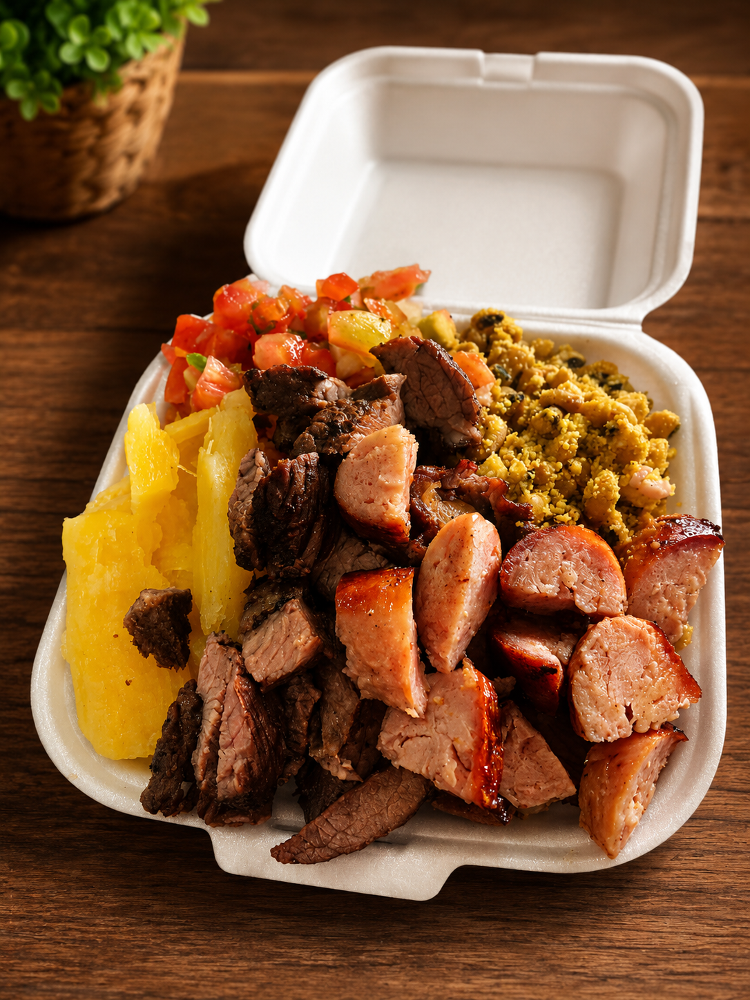
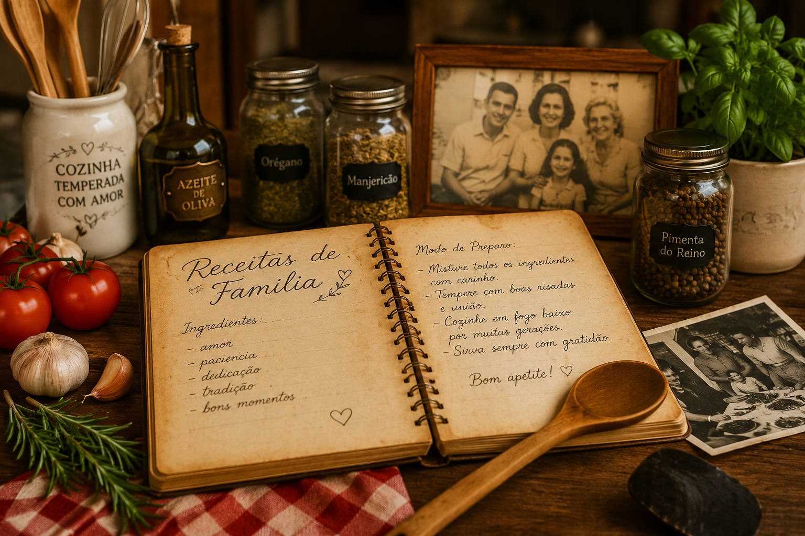
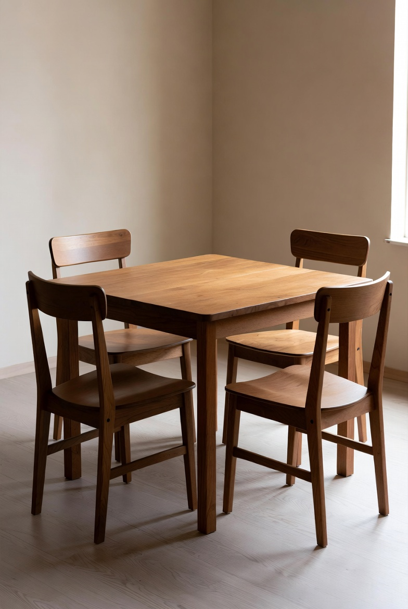

Curiosidades da Casa
Conheça fatos interessantes, tradições e números que fazem parte do nosso restaurante.
Momentos Especiais

O Prato Campeão
Nossa marmita com churrasco é o mais pedido da casa e conquista clientes há anos.

Receitas de Família
Algumas receitas utilizadas atualmente foram inspiradas em cadernos culinários passados entre gerações.

Onde Tudo Começou
O restaurante iniciou suas atividades em um pequeno espaço com apenas 12 mesas.
Cada receita conta uma história, e cada cliente faz parte dela.
Fatos Curiosos
Mais de 50 mil pratos servidos
Ao longo dos anos já ultrapassamos a marca de cinquenta mil refeições preparadas.
Café da Casa
Em datas especiais oferecemos café gratuito para todos os clientes após a refeição.
Aniversariantes Ganham Sobremesa
Quem comemora aniversário conosco recebe uma sobremesa especial preparada pela equipe.
Muito além da comida, buscamos criar experiências e momentos especiais para nossos visitantes.